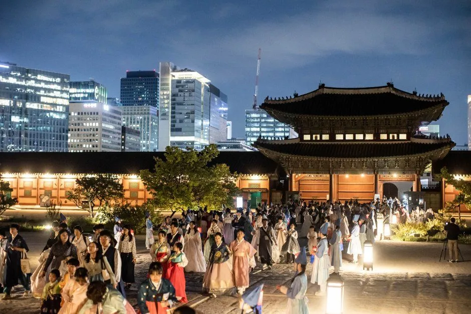
▲ 야간 조명이 켜진 전각 앞마당에 관람객이 모인 장면. 한국관광공사가 '궁중문화축전'으로 게시한 사진(촬영 연도 미상) 사진=한국관광공사
10월 7일(수)부터 11일(일)까지, 서울 4대궁과 종묘가 닷새간 축제 무대가 된다. 국가유산청 궁능유적본부와 국가유산진흥원이 여는 '2026년 가을 궁중문화축전'이다. 올해는 10월 9일 한글날이 금요일이라, 축전 후반부가 9~11일 사흘 연휴와 그대로 겹친다.
이 글은 프로그램 소개보다 "어느 궁에 무엇이 있고, 예약이 필요한지, 차는 어디에 대고 어떻게 움직일지"에 초점을 맞췄다. 야간관람·후원 예약·창경궁 야연처럼 개별 기사로 다룬 소재는 경복궁 야간관람 예매·주차, 창덕궁 후원 예약, 덕수궁 밤의 석조전, 창경궁 야연, 광화문 빛모락 가을축제(종료) 기사로 넘긴다.
1. "닷새, 다섯 곳" — 축전 기본 정보와 예약 구조
축전의 큰 틀은 '낮에는 전시·투어·체험, 밤에는 공연·야경 체험'이다. 국가유산진흥원 행사 페이지는 기간(10.7~10.11), 장소(5곳), 주최(국가유산청 궁능유적본부·국가유산진흥원), 예매처(티켓링크), 문의처(궁능활용프로그램 전화상담실 1522-2295)를 안내한다. 같은 페이지의 예약 프로그램 목록에는 사전예약 개시 시각도 함께 나와 있다.
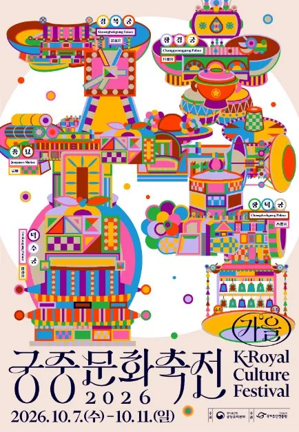
▲ 2026 궁중문화축전 포스터. 하단에 행사 기간 10.7(수)~10.11(일)이 적혀 있다(한국관광공사가 '궁중문화축전'으로 게시한 이미지) 사진=한국관광공사
| 프로그램 | 행사 기간 | 예약 개시 |
|---|---|---|
| 경복궁 한복 연향 | 10/9~10/10 | 12:00 |
| 특별 굿즈 '궁패스 향낭' | 10/7~10/11 | 12:00 |
| 아침 궁을 깨우다 (창덕궁) | 10/7~10/11 | 14:00 |
| 준명당 어린이 학교 (덕수궁) | 10/9~10/11 | 14:00 |
| 향아치와 함께하는 규장각 초계문신 워크숍 (창덕궁) | 10/9~10/11 | 14:00 |
| 한복 입은 그대, 그림 속을 걷다 | 10/7~10/11 | 15:00 |
| 동궐 장원서 | 10/7~10/11 | 15:00 |
| 종묘 건축 탐험대 | 10/10~10/11 | 16:00 |
| 궁중문화축전, K-콘텐츠 플랫폼이 되다(학술 행사) | 10/11 | 16:00 |
예약은 개시 시각이 프로그램마다 달라 이미 시작됐고, 인기 회차는 마감됐을 수 있다. 다만 국가유산진흥원이 9월 30일 공개한 보도자료는 '사전예약 없이 현장에서 참여할 수 있는 프로그램'을 따로 안내했다. 희정당 특별전시(당일 현장 대기 예약), 길놀이, 궁중놀이방, 창경궁 시간여행이 여기에 해당하고, 4대궁과 종묘 10곳을 잇는 스탬프 투어는 지도에 도장을 모두 채운 완주자에게 선착순으로 기념품을 준다. 잔여 회차와 최종 일정은 공식 사이트에서 확인하는 것이 가장 정확하다.
전체 일정표와 예약 상태는 공식 사이트에서 확인할 수 있다. 궁중문화축전 공식 사이트 바로가기 예매는 티켓링크에서 진행된다. 티켓링크 바로가기
⚠️ 기사마다 날짜·인원이 조금씩 다르다
일부 보도는 한복 연향 인원을 서로 다르게 적었다. 이 글은 국가유산진흥원 행사·일정 페이지와 9월 30일 보도자료의 표기를 우선했다. 종묘 수문장 순라의식, 희정당 전시 운영시간, 창경궁 시간여행·물빛연화는 이 공식 자료로 확인해 확정으로 올렸고, 공식 페이지에서 확인되지 않은 항목은 "보도 기준"으로 표시했다. 한복 연향의 800명은 보도에 따라 2일간 총 규모로 소개되며 외국인 회차 여부는 보도마다 표현이 달라 확정하지 못했고, 내국인 정원과 참가 조건(한복 착용 여부 등)은 이번 연도 공식 안내(행사 페이지의 상세 내용란이 비어 있다)를 확인하지 못했다.
2. 전야 공연과 경복궁 한복 연향 — 밤 프로그램 두 가지
축전의 시작은 10월 6일(화) 17시, 경복궁 흥례문 광장이다. 국가유산청이 밝힌 대로 KBS2 '불후의 명곡' 특별 공연이 '궁, 예술을 깨우다'를 주제로 열린다. 사회는 신동엽·김준현·이찬원이 맡고, 김영임·김창완밴드·린·이승기·송가인·엔믹스·보이넥스트도어 등이 출연한다(국가유산청 보도자료). 관람은 KBS '불후의 명곡' 공식 홈페이지에서 방청을 신청해 추첨하는 무료 방식이고, 2,500명(외국인 300명 포함)을 초청한다.
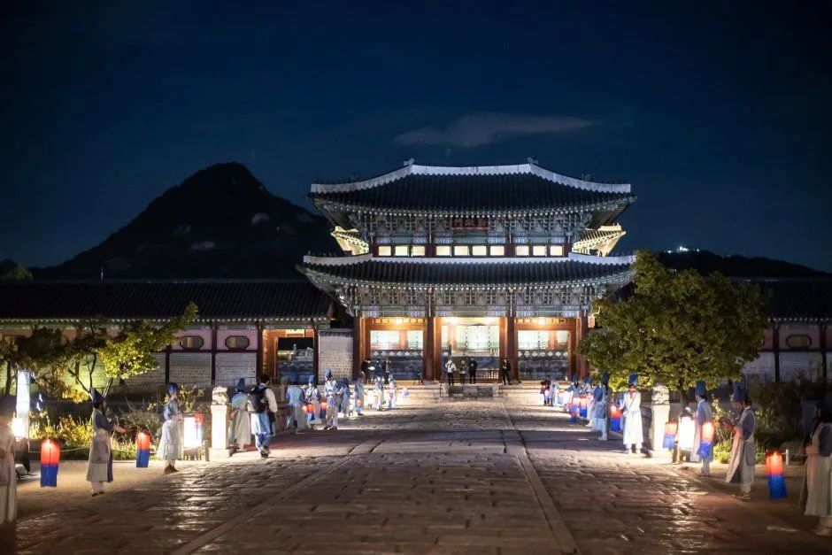
▲ 등불이 늘어선 돌길 끝에 조명을 받은 2층 전각이 서 있고 뒤로 산 능선이 보이는 야경. 어느 궁의 어느 전각인지는 사진 출처에서 확인하지 못했다(한국관광공사가 '궁중문화축전'으로 게시한 사진, 촬영 연도 미상) 사진=한국관광공사
전야 공연은 당첨자 대상 방송 녹화 행사이므로 일반 관람객이 현장에서 자유롭게 볼 수 있는 구조가 아니라는 점에 유의해야 한다. 공식 일정 페이지는 이 행사를 10월 6일 17:00~21:00(240분), 1일 1회로 안내하며, 녹화분은 10월 31일(토) KBS2에서 방송될 예정이다. 또 10월 6일은 화요일로 경복궁 정기 휴관일이어서, 이날 일반 궁궐 관람이 가능한지, 방청객 차량의 주차는 어떻게 하는지는 공지를 확인하지 못했다.
| 구분 | 일시·장소 | 참여 방식·비고 |
|---|---|---|
| 불후의 명곡 특별 공연(전야) | 10/6(화) 17~21시, 경복궁 흥례문 광장(공식 일정 페이지) | KBS 사이트 방청 신청·추첨, 무료, 2,500명(외국인 300명 포함). 10/31 KBS2 방송 예정 |
| 경복궁 한복 연향 | 10/9(금)~10/10(토) 19~21시(보도 기준), 경복궁 | 사전예약(9/4 12시 개시, 티켓링크). 한복 착용 조건은 이번 연도 공식 안내 미확인 |
| 한복 연향 구성 | 왕가의 산책(행렬 재현), 순화궁의 궁중복식 안내서 전시, 이야기쇼 '조선 왕실의 OOTD', '한복 짓는 소리' 시연 | 아시아경제 보도 기준 |
| 창경궁 물빛연화 | 10/7~11/1 수~일, 19:00·19:30·20:00 3회(회차당 16분), 창경궁 춘당지 일대(국가유산진흥원 공식) | 멀티미디어 관람석 사전예약제(티켓링크 1매 1,000원, 창경궁 입장료 포함, 회차당 400명, 7세 이상). 접수는 홍화문 옆 접수처 |
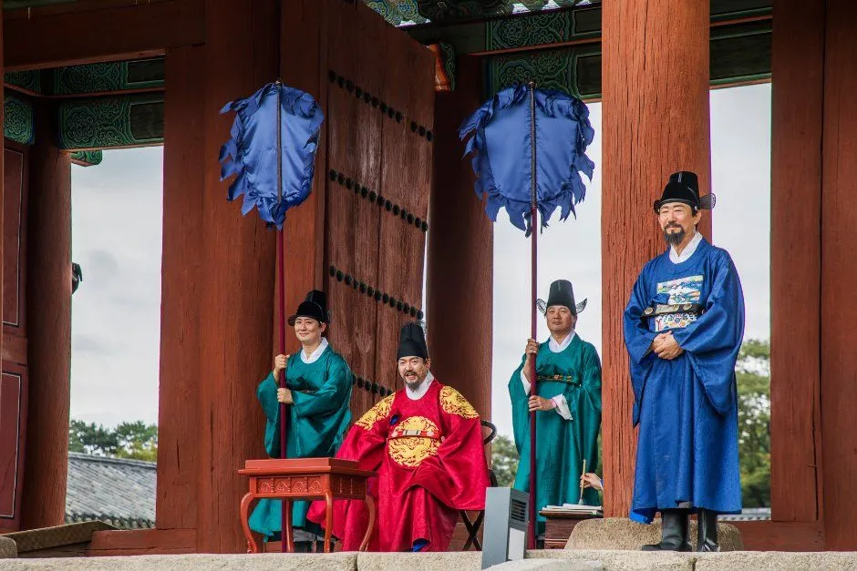
▲ 붉은 곤룡포 차림 인물과 관복 차림 인물들이 모인 왕실 재현 장면(한국관광공사가 '궁중문화축전'으로 게시한 사진, 촬영 연도 미상) 사진=한국관광공사
한복 연향은 한글날 금요일(10월 9일) 저녁과 토요일 저녁에 열려 연휴 혼잡과 겹친다(추정). 참고로 2024년 같은 행사는 한복 착용자만 입장하고 신분증 확인 접수를 했지만, 이는 과거 사례일 뿐 올해 규정은 아니다. 올해 접수 방식은 티켓링크 상세 안내를 확인해야 한다.
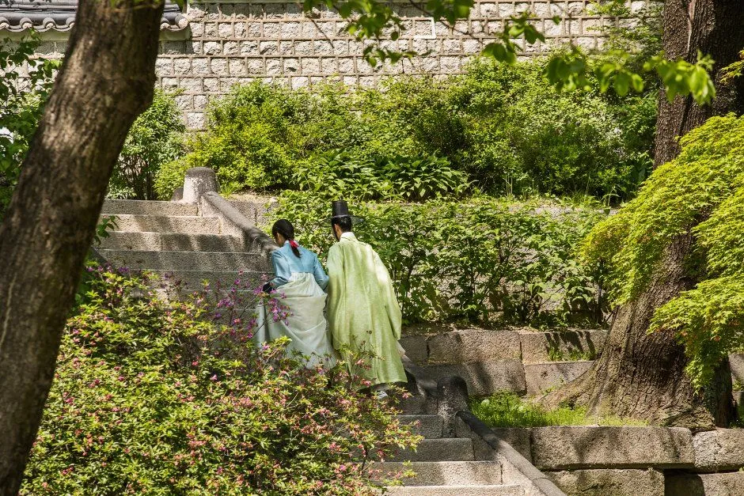
▲ 한복 차림 두 사람이 돌담과 나무 사이 돌계단을 오르는 뒷모습. 장소와 촬영 연도는 사진 출처에서 확인하지 못했다(한국관광공사가 '궁중문화축전'으로 게시한 사진) 사진=한국관광공사
3. 낮 프로그램 — 궁별로 무엇이 열리나
낮 프로그램은 궁별 특징이 뚜렷하다. 창덕궁은 전시와 워크숍, 덕수궁은 순종황제 서거 100주기 기념 전시, 창경궁은 재현·체험, 종묘는 건축 탐험이다.
| 궁 | 프로그램 | 일정·방식 |
|---|---|---|
| 창덕궁 | 희정당 '조선 공간 미학: 백(白)의 질서' 특별전시 | 10/7~11, 10:00~17:00. 당일 현장 대기 예약으로 순서대로 입장(사전예약 아님, 국가유산진흥원 공식) |
| 창덕궁 | 성정각 '왕세자의 하루' 전시 | 수~일 10:00~17:00(공식 일정표). 참여 방식은 확인 못 함 |
| 창덕궁 | 아침 궁을 깨우다 — 전각과 후원을 걷는 투어 | 수~일 07:30·08:00(공식 일정표). 사전예약. 영어 회차는 보도에 '두 번째 회차' 또는 '매일'로 엇갈려 공식 페이지에서 확인 못 함 |
| 창덕궁 | 향아치와 함께하는 규장각 초계문신 워크숍 | 10/9~11 14:30(보도 기준). 사전예약 |
| 창덕궁 | 궁중놀이방(낙선재 앞) | 자원활동가 '궁이둥이' 기획. 현장 참여 |
| 덕수궁 | 덕홍전 '광무에서 융희까지' (순종황제 승하 100주년) | 10/7~11(공식 보도자료). 순종황제 연대기 전시·AI 활용 친담회·전기수와 함께하는 역사탐방. 운영시간(10~17시)은 보도 기준 |
| 덕수궁 | 준명당 어린이 학교(궁궐 자연 체험 활동지, 대형 자개 키링 모형에 압화 스티커 붙이기. 7~10세·한복 착용 조건은 보도 기준) | 10/9~11. 사전예약(공식 일정표). 보도자료는 현장 체험으로도 소개 |
| 덕수궁 | 학술 세미나(정관헌) | 10/11. 사전예약(공식 일정표) |
| 덕수궁 | 길놀이 | 10/11(일) 13:00·16:00(공식 일정표) |
| 창경궁 | 창경궁 시간여행(왕실 일상 재현) | 10/9(금)·10/10(토) 12:00·15:30 각 120분. 명정문·통명전·함인정·문정전 일대, 현장참여(공식) |
| 창경궁 | 동궐 장원서(대온실 옆마당, 종이 꽃다발 체험) | 10/7~11. 공식 일정표는 사전예약, 보도자료는 '현장 이벤트'로 소개해 예약 없이 되는지는 확인 못 함 |
| 창경궁 | 한복 입은 그대, 그림 속을 걷다(창경궁·창덕궁 일대) | 수~일 9:20·9:50·10:20 / 13:20·13:50(공식 일정표). 사전예약 |
| 창경궁 | 길놀이(사자춤·기접놀이·사물놀이) | 10/10(토) 11:30·14:30, 경춘전~환경전 일대, 현장참여(공식 일정표) |
| 종묘 | 종묘 건축 탐험대(청소년 대상은 보도 기준) | 10/10~11. 사전예약 |
| 종묘 | 수문장 순라의식(조선시대 궁궐 순찰 재현) | 10/9~11 15:30부터 약 1시간, 종묘 외대문·종묘 광장 일대. 가을 축전 기간에만 운영, 정조 재위기(18세기) 궁궐 호위군을 고증해 구성(국가유산진흥원 9/30 보도자료) |
| 5곳 공통 | 스탬프 투어(10개 지점) | 현장 참여. 지도에 도장을 모두 채운 완주자에게 선착순 기념품(공식 보도자료) |
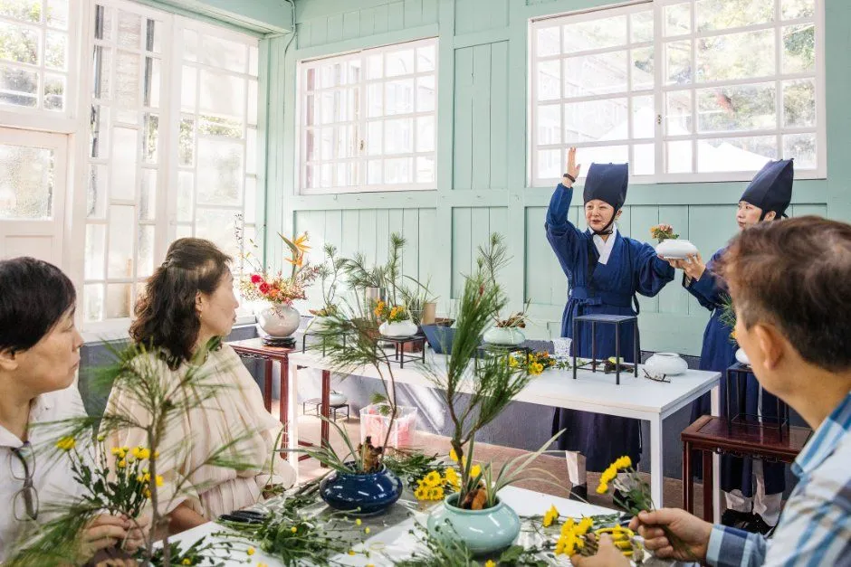
▲ 전통 복식 차림 안내자와 참가자들이 꽃꽂이 체험을 하는 실내 장면(한국관광공사가 '궁중문화축전'으로 게시한 사진, 촬영 연도 미상) 사진=한국관광공사
사전예약 프로그램은 이미 9월 4일에 열렸다는 점에서 지금부터 새로 잡기는 쉽지 않을 수 있다. 반대로 희정당 전시처럼 현장 대기 등록형이거나 길놀이·스탬프 투어 같은 현장 프로그램은 연휴 중 시간대 선택이 관건이다. 첫 회차(10시 개장 직후)나 평일인 7~8일(수·목)에 가는 편이 한결 여유롭다(추정).
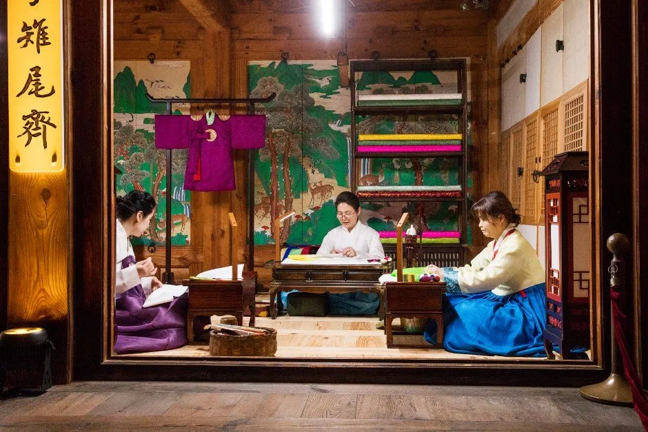
▲ 전각 안에서 한복 차림 사람들이 작업하는 장면을 재현한 모습. 어느 궁의 어느 건물인지는 사진 출처에서 확인하지 못했다(한국관광공사가 '궁중문화축전'으로 게시한 사진, 촬영 연도 미상) 사진=한국관광공사
4. 입장료·관람시간·휴관일 — 축전 외에 챙길 것
축전 프로그램과 별개로 궁 입장료는 따로 필요한 경우가 많다. 궁능유적본부 관람요금 안내 기준으로 경복궁·창덕궁은 3,000원, 창경궁·덕수궁·종묘는 1,000원이다. 만 24세 이하와 65세 이상 내국인, 한복 착용자 등은 무료 대상으로 안내된다. 창덕궁 후원은 별도 예약이며 대인 5,000원(만 19~64세)에 전각 관람권도 따로 사야 한다. 한복 착용 무료입장은 연휴에 특히 활용도가 높다. 하루에 여러 궁을 돌 거라면 궁궐 통합관람권(6,000원, 구매일로부터 6개월 중 1회, 4대궁·종묘 매표소에서 구입, 창덕궁 후원 제외)이 개별 합계 9,000원(경복궁 3,000+창덕궁 3,000+덕수궁 1,000+창경궁 1,000+종묘 1,000)보다 싸다. 다만 창경궁 물빛연화는 1매 1,000원짜리 별도 티켓(창경궁 입장료 포함)이고, 이 티켓에는 무료입장·할인 대상자 할인이 따로 적용되지 않는다.
| 궁 | 성인 관람료 | 관람시간(입장마감) | 정기 휴관일 |
|---|---|---|---|
| 경복궁 | 3,000원 | 09:00~18:00 (17:00) | 화요일 |
| 창덕궁 | 3,000원(후원 별도) | 09:00~18:00 (17:00) | 월요일 |
| 덕수궁 | 1,000원 | 09:00~21:00 (20:00) | 월요일 |
| 창경궁 | 1,000원 | 09:00~21:00 (20:00) | 월요일 |
| 종묘 | 1,000원 | 09:00~18:00 (17:00). 월·목·금은 해설사 동반 시간제 관람(약 50분), 토·일·공휴일·수요일은 자유관람(궁능유적본부 관람시간 안내) | 화요일 |
축전 기간(수~일)은 월·화요일 휴관과 겹치지 않는다. 종묘는 10/7(수·문화가 있는 날)과 9~11일(공휴일·주말)이 자유관람이고, 10/8(목)만 시간제 해설 관람일이라 순라의식(9~11일)을 보러 갈 때와 입장 방식이 다르다. 다만 10월 12일(월)은 창덕궁·덕수궁·창경궁 휴관일이니 연휴 마지막 날까지 이어 가려면 11일(일)까지 마치는 일정이 안전하다. 관람시간은 시즌마다 바뀔 수 있으므로 방문 직전 공식 안내를 재확인하자.
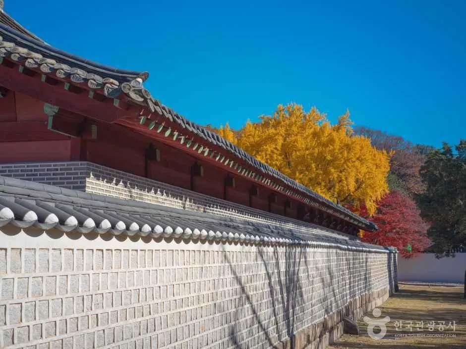
▲ 돌담 너머 붉은 기둥의 건물과 노랗게 물든 나무가 보이는 풍경(한국관광공사 '종묘' 게시 사진, 촬영 시기 미상) 사진=한국관광공사
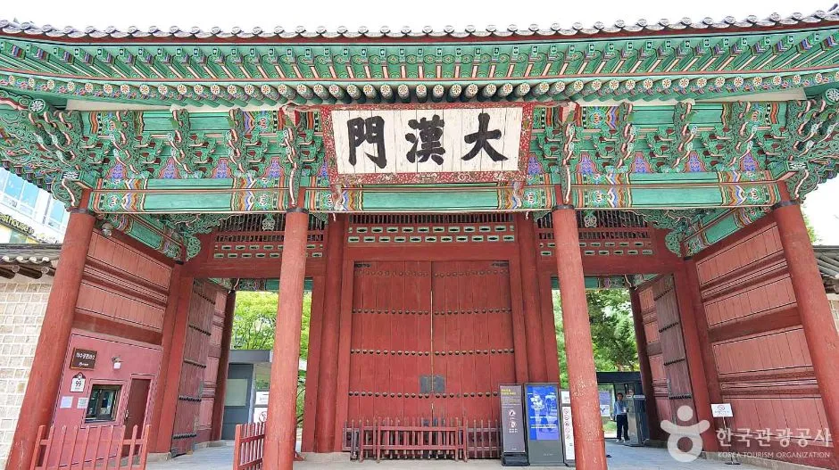
▲ 덕수궁 대한문 정면(한국관광공사 '덕수궁 대한문' 게시 사진, 촬영 연도 미상) 사진=한국관광공사
궁별 요금과 관람시간은 궁능유적본부에서 확인할 수 있다. 궁능유적본부 관람요금 바로가기
5. 자동차 여행자 핵심 — 궁별 주차와 접근
결론부터 말하면 5곳 중 방문객용 주차장이 제대로 있는 곳은 경복궁 하나뿐이다. 나머지는 인근 유료 주차장이나 대중교통에 의존해야 한다.
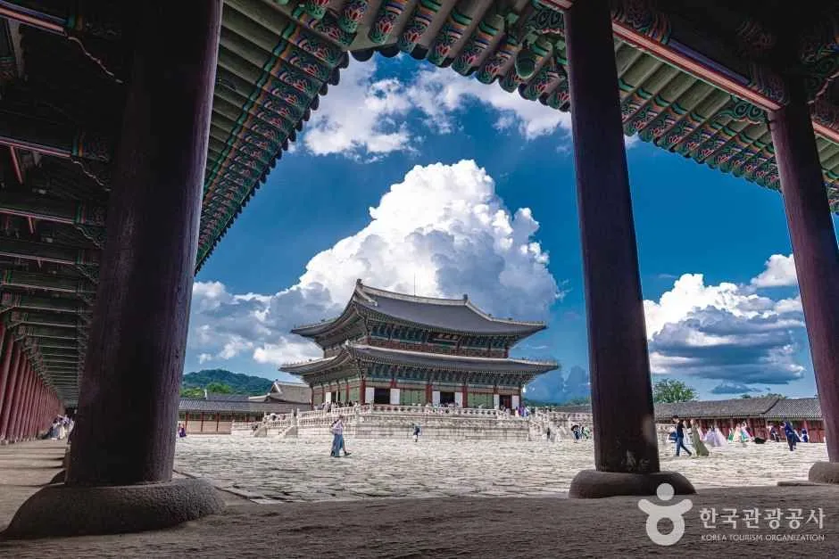
▲ 넓은 마당 너머로 전각이 보이는 경복궁 풍경(한국관광공사 '경복궁' 게시 사진, 촬영 연도 미상) 사진=한국관광공사
| 궁 | 자가용·주차 | 가장 가까운 대중교통 |
|---|---|---|
| 경복궁 | 부설주차장: 06:00~23:00, 승용차 240대(지하)·버스 50대(지상). 소형 기본 1시간 3,000원, 초과 10분당 800원(궁능유적본부 안내) | 3호선 경복궁역 5번 출구 도보 약 2분. 안국역 1번 출구·광화문역 2번 출구 도보 약 6분 |
| 창덕궁 | 주차시설 없음(공식 안내). 인근 민영·노상 주차는 요금이 높아, 앞선 기사 기준 제1주차장 시간당 7,200원·원서공원 앞 노상 시간당 6,000원 | 3호선 안국역 3번 출구 도보 5분. 종로3가역 7번 출구 도보 10분 |
| 덕수궁 | 방문객용 주차장 없음(공식 안내: 주차시설이 없으니 대중교통 이용) | 1·2호선 시청역 2번 출구 도보 약 2분. 5호선 광화문역 2·6번 출구 도보 약 10분 |
| 창경궁 | 창경궁 주차장(22면)은 2025.1.5부터 폐쇄, 별도 주차장 없음. 공사 상황에 따라 변동 가능하고, 폐쇄 종료일은 공지(수정본)엔 2027.12.31, 오시는 길 페이지엔 2026.12.31로 적혀 안내가 엇갈린다. 어느 쪽이든 10월 현재 이용 불가 | 4호선 혜화역 4번 출구 도보 약 12분(공식). 버스는 '서울대학교병원'·'창경궁·서울대학교병원' 하차. 주소 종로구 창경궁로 185 |
| 종묘 | 관리소 자체 주차시설 없음. 궁능유적본부는 '종로구청 운영 종묘 공영주차장(유료)' 이용을 안내한다. 같은 이름의 서울시설공단 직영 공영주차장 '종묘'(종로구 훈정동 2, 1,317면, 24시간)는 5분당 400원(시간당 4,800원), 진입 높이 2.0m 제한(서울시설공단). 운영 주체 표기가 두 곳에서 다르다 | 1·3·5호선 종로3가역 11번·8번 출구 도보 5분 |
| 구분 | 내용 |
|---|---|
| 운영 | 06:00~23:00, 승용차 240대(지하)·버스 50대(지상). 문의 02-736-9536(위탁 관리 ㈜제일비엠시) |
| 소형차 | 기본 1시간 3,000원, 초과 매 10분 800원, 회전시간 10분 무료. 소형차가 지상주차장을 쓰면 중·대형 요금 적용 |
| 중·대형차 | 기본 1시간 5,000원, 초과 매 10분 800원 |
| 감면 50% | 경승용차(1,000cc 이하), 환경친화적·저공해자동차(하이브리드 포함), 2자녀 이상 다자녀 차량. 증빙 지참 |
| 감면 80% | 장애인·국가유공자·의상자 차량(본인 탑승 시) |
| 전기차 | 충전소 지상 6면. 충전 시 1시간 범위 주차요금 면제, 이후 부과분 50% 할인. 환경친화적차 전용 구역은 지하 9면 |
궁별 오시는 길과 주차 안내는 궁능유적본부에서 확인할 수 있다. 경복궁 오시는 길 바로가기
🚗 자차로 간다면
· 한 곳에 세우고 걷는 전략: 경복궁 부설주차장은 지하 240대 규모라 연휴·야간 행사 때 만차가 될 수 있다(추정). 경차(1,000cc 이하)·저공해차(하이브리드 포함)·다자녀 차량은 50% 감면, 전기차는 충전 시 1시간 면제 후 50% 감면이다(공식). 만차라면 광화문 세종로 공영주차장 등이 대안이지만, 같은 시간대 광화문 일대 혼잡을 감안해야 한다.
· 야간 행사(한복 연향) 후 출차는 경복궁 주차장 마감(23:00) 전에 마치는 것이 안전. 21시 종료 직후 출차 정체는 추정.
· 창덕궁·창경궁·종묘 연계 방문이라면 주차를 포기하고 안국역·종로3가역을 쓰는 편이 사실상 가장 빠르다.
· 교통통제: 한글날 연휴·전야 공연 기간의 광화문·세종로 일대 교통통제 공지는 이 글 작성 시점(10월 1일)에 확인하지 못했다. 방문 직전 서울경찰청·서울시 교통정보를 확인할 것.
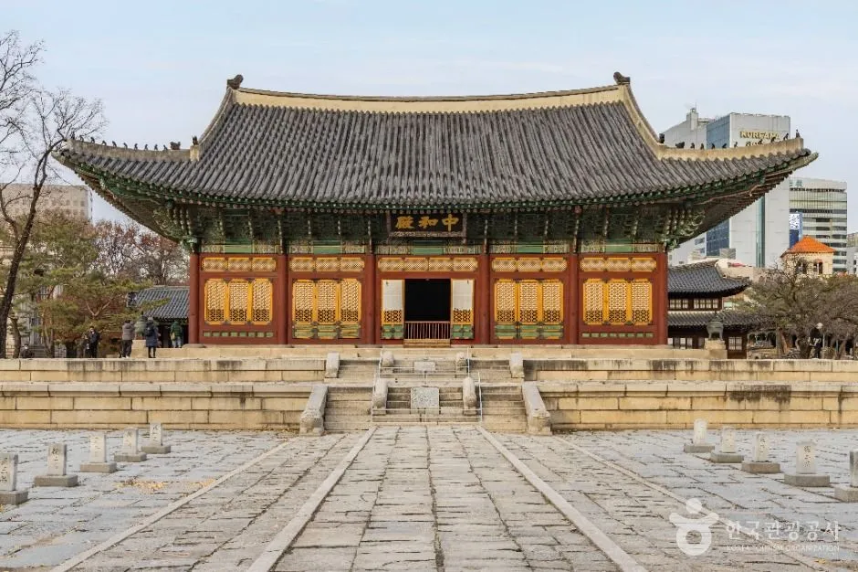
▲ 돌 마당 너머로 큰 전각이 서 있는 덕수궁 풍경(한국관광공사 '덕수궁' 게시 사진, 촬영 연도 미상) 사진=한국관광공사
6. 한글날 연휴 혼잡 — 언제 가야 덜 붐비나
9~11일 연휴 + 한복 연향 + 길놀이가 한꺼번에 몰리는 시기다. 공식 방문자 수 예측은 확인하지 못했지만, 국가유산청 발표(ZDNet Korea 등 보도)에 따르면 올해 봄 궁중문화축전(4월 24일~5월 3일, 9일간) 방문객은 72만 5,281명으로 역대 최다였고, 외국인은 18만 3,427명으로 전년 대비 33% 늘었다. 가을 축전도 같은 흐름이라면 연휴 중 인기 회차는 붐빌 가능성이 있다(추정).
| 날짜 | 공식 일정 특징 | 추정되는 분위기 |
|---|---|---|
| 10/6(화) | 전야 공연(경복궁 흥례문 광장, 방청 당첨자) | 광화문 일대 저녁 혼잡 가능 |
| 10/7(수)·8(목) | 전시·투어 중심, 한복 연향·시간여행·길놀이 없음 | 평일이라 비교적 한산(추정) |
| 10/9(금, 한글날) | 한복 연향 19시(보도 기준), 시간여행 12시·15:30, 종묘 순라 15:30 | 연휴 시작, 저녁 혼잡(추정) |
| 10/10(토) | 길놀이(창경궁 11:30·14:30), 한복 연향, 시간여행, 종묘 건축 탐험대 | 가장 붐빌 가능성(추정) |
| 10/11(일) | 길놀이(덕수궁 13:00·16:00), 종묘 건축 탐험대, 학술 행사 | 귀경 정체와 겹칠 수 있음(추정) |
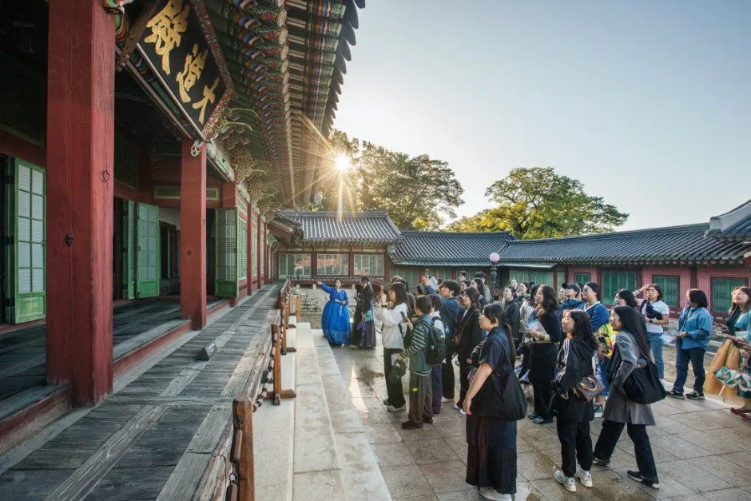
▲ 붉은 기둥이 이어진 회랑에 관람객이 가득한 모습. 어느 궁인지는 사진 출처에서 확인하지 못했다(한국관광공사가 '궁중문화축전'으로 게시한 사진, 촬영 연도 미상) 사진=한국관광공사
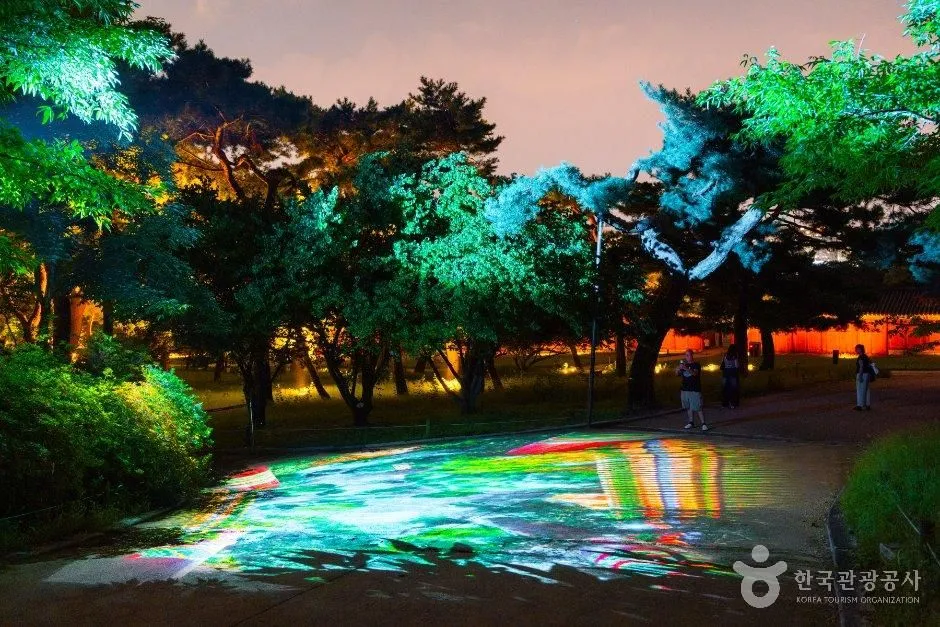
▲ 밤에 나무와 바닥에 초록·보라색 조명이 비친 야경. 창경궁 게시 사진 중 하나로, 어느 프로그램의 장면인지는 확인하지 못했다(한국관광공사, 촬영 연도 미상) 사진=한국관광공사
7. 하루 코스 예시 — 토요일 대중교통 + 경복궁 연계
아래는 공식 일정표의 시간을 이어 붙인 이 글의 예시 코스다. 이동 시간과 대기 시간은 반영하지 못했으므로 현장 상황에 맞게 조정해야 한다. 아침 궁을 깨우다와 한복 연향은 사전예약이 필요해 이미 마감됐을 수 있다.
| 시각 | 할 일 | 비고 |
|---|---|---|
| 07:30~ | 창덕궁 '아침 궁을 깨우다'(예약했을 때) | 안국역 3번 출구, 소요시간 공식 확인 필요 |
| 10:00~ | 창덕궁 희정당 특별전시(현장 대기 등록) | 10~17시, 보도 기준 |
| 11:30 | 창경궁 길놀이 관람(1회차) | 2회차 14:30 |
| 점심 | 안국·종로 일대 | — |
| 15:30 | 종묘 수문장 순라의식(종묘 외대문·광장, 약 1시간) | 국가유산진흥원 9/30 보도자료 기준. 토요일 종묘는 자유관람일 |
| 17:00 이후 | 경복궁으로 이동(3호선 안국→경복궁) | 자차는 경복궁 부설주차장 이용 |
| 19:00~21:00 | 경복궁 한복 연향(예약했을 때) | 한복 착용 조건 확인 |
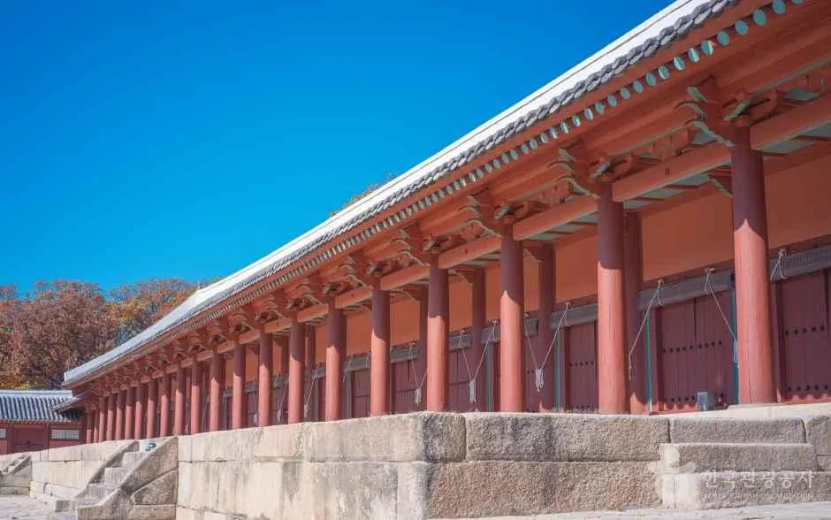
▲ 푸른 하늘 아래 붉은 기둥이 길게 이어진 건물 측면 풍경(한국관광공사 '종묘' 게시 사진, 촬영 연도 미상) 사진=한국관광공사
8. 밤 일정 귀가 점검과 자주 묻는 질문
자차 여행자에게 가장 변수가 큰 건 밤 프로그램 이후의 출차와 귀가다. 주차장이 닫는 시각과 궁 입장 마감, 행사 종료 시각을 한 표로 맞춰 봤다.
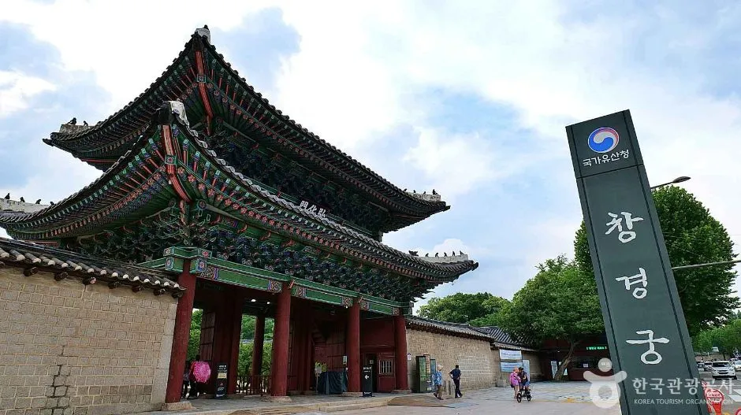
▲ 창경궁 정문 홍화문. 물빛연화 접수처는 이 문 옆에 마련된다(한국관광공사 '창경궁 홍화문' 게시 사진, 촬영 연도 미상) 사진=한국관광공사
| 프로그램 | 시간·마감 | 자가용 귀가 포인트 |
|---|---|---|
| 불후의 명곡 특별 공연(경복궁) | 10/6 17:00~21:00, 방청 당첨자 | 경복궁 부설주차장은 23:00 마감. 공연 당일 광화문 일대 통제 여부는 미확인 |
| 경복궁 한복 연향 | 10/9~10 19~21시(보도 기준) | 21시 종료 후 주차장 마감(23:00)까지 약 2시간 여유. 출차 정체는 추정 |
| 창경궁 물빛연화 | 수~일 19:00·19:30·20:00 회차(각 16분). 창경궁 입장마감 20:00, 퇴장 21:00 | 창경궁 주차장 폐쇄. 혜화역(도보 약 12분) 또는 종묘 공영주차장(24시간) 이용을 고려. 7세 이상만 입장 |
| 덕수궁 야간 관람 | 09:00~21:00, 입장마감 20:00 | 주차시설 없음. 시청역 2번 출구 도보 약 2분 |
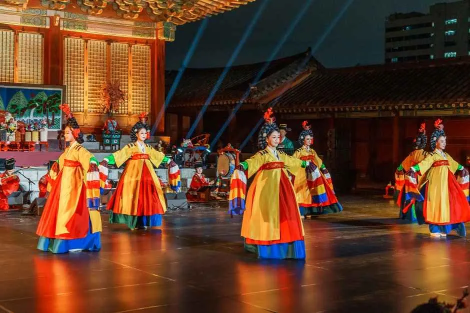
▲ 밤 무대에서 화려한 전통 의상의 무용수들이 공연하는 장면. 한국관광공사가 '2026 창경궁 야연'으로 게시한 사진으로, 이번 축전 프로그램의 장면은 아니다 사진=한국관광공사
❓ 자주 묻는 질문
Q. 예약을 못 했는데 갈 만한 게 있나?
공식 일정표에서 '현장참여'로 분류된 프로그램이 희정당 전시, 스탬프 투어, 궁중놀이방, 창경궁 길놀이, 창경궁 시간여행이다. 종묘 수문장 순라의식도 보도자료에 예약 언급이 없다. 희정당은 당일 현장 대기 예약이라 개장 직후가 유리하다(추정).
Q. 한복을 입고 가면 어떻게 되나?
궁궐 입장은 한복 착용자가 무료 대상으로 안내된다(착용 기준은 궁능유적본부 '한복무료관람 가이드라인' 참고). 다만 경복궁 한복 연향은 별도 예약 프로그램이고 올해 참가 조건은 확인하지 못했다.
Q. 10월 12일(월)에 이어 가도 되나?
창덕궁·덕수궁·창경궁은 월요일 휴관이다. 연휴 마지막 날인 11일(일)까지 마치는 일정이 안전하다.
Q. 아이와 야간 프로그램에 갈 수 있나?
물빛연화는 7세 이상(2019년 이전 출생)만 입장하고, 취학 연령 아동·청소년은 보호자와 동반해야 한다(국가유산진흥원 안내).
Q. 차는 어디에 두는 게 가장 무난한가?
주차장이 있는 곳은 경복궁뿐이다. 창덕궁·창경궁·종묘를 묶어 도는 날이라면 종묘 공영주차장이 있지만 시간당 4,800원이라 길게 세우기엔 비싸다. 지하철로 안국·종로3가·혜화를 오가는 편이 낫다(추정).
9. 요약
2026 가을 궁중문화축전은 10월 7~11일 4대궁과 종묘에서 열린다. 전야 공연은 10월 6일 17시 경복궁 흥례문 광장(KBS 방청 신청·추첨), 경복궁 한복 연향은 10월 9~10일 저녁이다. 예약 프로그램은 9월 4일부터 프로그램별로 티켓링크에서 열렸고, 희정당 전시·길놀이·스탬프 투어·궁중놀이방·창경궁 시간여행 같은 현장참여 프로그램은 예약 없이 즐길 수 있다.
자가용은 경복궁 부설주차장(06~23시, 소형 시간당 3,000원)만 현실적이다. 창덕궁·종묘는 자체 주차장이 없고, 창경궁 주차장은 공지상 2027년 말까지 폐쇄 중이며, 덕수궁은 주차시설이 없다. 종묘 공영주차장은 5분당 400원(시간당 4,800원)이다. 한글날 금요일부터 3일 연휴라 9~11일은 붐빌 가능성이 있어(추정), 한산한 7~8일이나 개장 직후를 노리고 지하철 안국·종로3가역을 쓰는 것이 낫다. 광화문 일대 교통통제 공지는 확인하지 못했으니 방문 직전 재확인하자.